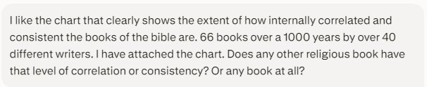

Do you believe that? I do. Firmly. But before I get into my reasons, I am curious to hear what yours are. Is it because you have heard about its unique attributes — things like textual authenticity, historical reliability, and interpretive accuracy? Whether by studying it yourself, listening to sermons on apologetics, or reading popular Christian books like Evidence That Demands a Verdict and Cold-Case Christianity. Or is it because you have read it repeatedly and you can see firsthand how it is like no other book you have ever read? Taking it a little further by comparing it to other great historical books you have read, such as The Iliad, The Odyssey, or The Divine Comedy. Or is it because your parents told you to?
For me it was all the above. Except my parents didn’t tell me to. I became a Christian the day before my senior year in high school. I had a paraphrase version of the NT that the girl I took to the Junior Prom had given me. At the time, I was confused by the gift, but in retrospect I can see she was simply trying to share the Lord with me. Fortunately, I kept it. After I became a Christian, I instinctively knew to find that book and read it. And I did. And I never stopped. It’s been over 50 years now. But in the beginning, it never even crossed my mind — what is this book? Why am I reading it? Where did it come from? Who wrote it? Is it reliable? Is the person (or persons) who wrote it reliable? Has anyone else ever read it? Those questions came later.
On a side note, the reason I got saved was because at a going-away party for a friend, I saw that he was given a gift — a book entitled Know Why You Believe by Paul Little. On the cover there were questions like: Why is there good and evil? Is there a God? Why does God allow suffering? After it was given, I asked the guy who gave it to him those same questions — why is there good and evil? Why is there pain and suffering? He replied that we could talk some other time. It was about 3 months later that he showed up at my house and shared the gospel with me, and I accepted Christ. But now I wish he had given me a copy of that very same book.
When I got to college, the church I attended was a very strong Bible-believing church. The Senior Pastor and Associate Pastor had each come from Dallas Theological Seminary. The College Pastor had come from Western Seminary. It should not have surprised me that apologetics would be woven into everything they taught us. It was here that the seeds of textual authenticity, historical reliability, and interpretive accuracy were sown.
At about this time a now-very-famous book was published, entitled Evidence That Demands a Verdict by Josh McDowell. I bought a copy and read it and quickly saw that the Bible I had been reading was unlike any other historical book ever written. It made sense to me why it was the most widely published and most widely read book in the world that has ever existed. I would go on to read other similar books such as Many Infallible Proofs by Henry Morris, The Genesis Flood by John Whitcomb and Henry Morris, and eventually Know Why You Believe and Know What You Believe by Paul Little.
Somewhere along the line its Divine authority was confirmed in my mind. First, the Bible itself claims to be the inerrant, inspired Word of God throughout. Next is its historical reliability — its archaeological and geographical qualifications are unmatched. Its attestation spans thousands of years, and its popularity and estimation are unmatched. But I will say that if I did not have any of that, just my experience from reading it these last 50+ years would be enough to convince me that this is a book like no other. I have read it cover to cover most of those years, in a different translation each time. In college I memorized 2 verses per day. When I graduated, I had memorized over 1,000 verses, which included the entire book of James and entire chapters of many other books in the Bible. Can I say that about any other book? I love Math, Physics and Chemistry. Could I read those textbooks cover to cover every year for 50 years? Could I memorize entire books or even chapters of them? Absolutely not. For that reason alone, I am certain the Bible is unlike any other book. That is indeed special. That is indeed the very Word of God!
Let’s take a break here. I don’t want this post or any of my posts to get too long. I have seen the acronym TL;DR a lot lately. I don’t want to see it in the Comments here 😉
Before I go: my conversation with AI this morning
Let me share the conversation I had with AI this morning on this subject. It started with the famous visualization of the Bible’s 63,779 cross-references — you can see the chart itself at Chris Harrison’s BibleViz page. My questions are the screenshots; the answers follow each one.

How unique is the Bible’s interconnectedness?
The Bible is exceptionally interconnected, but this chart alone does not demonstrate that it is internally consistent or uniquely divine. No rigorous comparative study has established that no other religious or literary collection has an equivalent level of correlation.
What the chart actually shows
The image was created by Chris Harrison and Christoph Römhild from 63,779 cross-references in the King James Bible. Each arc represents a conceptual connection involving such things as a person, place, phrase, event, or theme. An important qualification is that these connections were largely identified by later Bible readers and editors, not necessarily placed there explicitly by the biblical authors. Another cross-reference compilation identifies approximately 340,000 connections, demonstrating that the total depends heavily on who defines and catalogs the links. The chart powerfully illustrates: repeated people, themes, language, events, and theological concepts; later biblical writers recalling and interpreting earlier Scripture; and the extensive canonical conversation between the Old and New Testaments. It does not, by itself, measure doctrinal agreement, historical accuracy, absence of contradiction, or statistical improbability.
Is the Bible exceptional?
Yes — particularly in its combination of a large canonical collection; composition and editing extending over more than a thousand years; numerous known and anonymous writers and editors; multiple languages, genres, historical settings, and political circumstances; and a sustained narrative movement from creation, covenant, Israel, and exile to Messiah, redemption, and new creation. The familiar “66 books, 40 authors, 1,500 years” formulation is a useful traditional summary, but it is not an exact scholarly statistic — 66 refers to the Protestant canon, and modern scholarship sees many biblical books as products of several writers, scribes, sources, and editorial stages. Its coherence is therefore real and striking, but it is best described as unity amid diversity, not absolute uniformity.
The nearest comparisons
| Collection | Comparable feature | Important difference |
|---|---|---|
| Vedic & Hindu scriptures | Developed through many contributors and roughly a millennium of oral transmission | Several genres and evolving philosophical schools rather than one continuous historical-redemptive narrative |
| Buddhist Pali Canon | A vast, internally connected sacred canon transmitted orally for centuries | Most material presents the teachings of one foundational teacher and his early community |
| Guru Granth Sahib | Nearly 6,000 hymns from Sikh Gurus and Hindu and Muslim saints around one devotional vision | Substantially smaller compositional span and narrative range — but probably the strongest comparison for theological unity among diverse contributors |
| Talmud | A vast conversation among many teachers compiled over several centuries | It intentionally records disagreements — consistency is not its organizing objective |
| Qur’an | Strong thematic and linguistic interconnectedness across its surahs | Delivered through one prophetic voice over roughly 22 years — not a millennium-long multi-author anthology |
| Mahabharata | An enormous text that accumulated material over centuries | One expanding epic tradition rather than a library of independently circulating books |
Bottom line
Other religious collections display enormous internal correlation, and some span centuries and many contributors. Nevertheless, the Bible’s particular combination of chronological breadth, literary diversity, numerous contributors, historical continuity, and sustained theological interconnection is unusual and perhaps unmatched among fixed sacred canons. However, “unmatched” cannot currently be stated as a mathematically demonstrated fact — no one has applied the same neutral cross-reference criteria to all the canons. From a Christian perspective, this coherence can reasonably be presented as evidence consistent with divine inspiration — strongest when described as remarkable cumulative evidence rather than as statistical proof.
It created the concise apologetics article — “The Bible: A Library That Reads Like One Story” — presenting the chart as strong cumulative evidence for inspiration while avoiding claims the visualization cannot prove. Then it asked if I would like a shorter version for Facebook or a church newsletter. Maybe.
![Screenshot of my prompt: Is there a branch of science that explains how to tell if a historical book is accurate, legitimate, reliable? If someone handed me a Holy Bible, a Quran, a Book of Mormon and told me the contents would change my life, how should I proceed and remain intellectually honest? Similarly if someone handed me the Iliad, the Odyssey, and Pride and Prejudice and told me the contents would change my life, would I proceed the same way? Are all religions dependent on a holy book that is the foundation for all they believe?](images/bible-like-no-other-3.jpg)
How to evaluate a book that claims to convey truth
There is no single laboratory science that can certify a historical or religious book. Instead, several disciplines work together: historiography and the historical method (claims about past events); textual criticism (what the original wording most likely was); source and redaction criticism (the sources behind a text and how editors arranged material); archaeology, epigraphy, numismatics, and paleography (texts against physical remains); philology and linguistics (vocabulary, grammar, possible anachronisms); literary criticism (genre, narrative technique, purpose); and philosophy of history and religion (testimony, miracles, revelation). These disciplines answer different questions. “Do we possess the author’s words?” is not the same question as “Did the reported event happen?” And neither one automatically answers “Did God inspire this book?”
Four questions that must be kept separate
Textual authenticity — do we know what the original text probably said? The New Testament has a particularly rich manuscript tradition, though its manuscripts contain variants textual critics must evaluate; a reliably reconstructed text may still contain false statements, and a text with copying variations may preserve accurate history — transmission and truth are separate questions. Historical reliability — does the document accurately describe people, places, customs, and events? When was it written, by whom, how close to the events, with what sources, and what does archaeology say? Reliability is rarely all-or-nothing. Interpretive accuracy — what was the author actually claiming? A poem should not be treated like a police report; a parable need not describe an actual event to communicate truth. Before asking “is this true?” ask “what kind of truth does this genre intend to communicate?” Divine authority — is this merely an ancient human text, or is it revelation? Historical investigation cannot place “inspired by God” under a microscope; that conclusion emerges from a cumulative argument.
An intellectually honest procedure
Begin with methodological neutrality: do not excuse evidence against the book you favor, do not magnify minor problems in the book you oppose, do not require greater evidence from rival beliefs than from your own, and do not confuse personal attraction or repulsion with historical evidence. Neutrality does not mean pretending all conclusions must be equal — it means allowing the evidence to produce unequal conclusions. Let each book state its own case: read substantial portions rather than collections of hostile quotations. Investigate provenance:
| Question | Why it matters |
|---|---|
| When did the text appear? | Measures chronological proximity to its reported events |
| Who produced it? | Identifies access, perspective, motives, and accountability |
| What manuscripts survive? | Tests stability and reconstructability |
| What earlier sources were used? | Reveals dependence and possible eyewitness access |
| Who first received it? | Shows whether contemporaries could challenge its claims |
| How was it recognized as authoritative? | Distinguishes composition from later canonization |
Test externally and internally — and examine the central claim first
Seek evidence both for and against each text: archaeology, inscriptions, contemporary writings, and cultural details externally; consistency, undesigned coincidences, and acknowledged difficulties internally. And not every disputed detail carries equal weight — identify the proposition upon which the religion rises or falls. For Christianity, the decisive historical claim is not that every biblical difficulty has been solved; it is that Jesus lived, was crucified, and rose from the dead — Paul himself stakes the faith’s truth on that event in 1 Corinthians 15:14–19. For Islam, the central question is whether Muhammad genuinely received divine revelation. For the Book of Mormon, its asserted translation history, witnesses, and claimed ancient civilizations invite direct historical and archaeological investigation. Existential testing matters too — does the worldview illuminate human experience, produce integrity and love, explain reality better than alternatives? — but personal transformation cannot independently authenticate a religion; people report changed lives through many movements.
Would you treat Homer and Austen the same way?
You would use some of the same intellectual disciplines, but not expect the same kind of truth. The Iliad and The Odyssey are epic poems, not modern historical reports — the right question is which elements may preserve historical memory, which are literary elaboration, and what human truths the epic communicates. Pride and Prejudice is deliberately fictional; asking whether Elizabeth Bennet actually married Mr. Darcy misunderstands its genre, yet the book can accurately portray pride, self-deception, and human relationships. A book can be life-changing without being historical, and historical without being life-changing. The crucial issue is whether the work honestly fulfills the kind of truth claim it makes.
Are all religions founded on holy books?
No. Religion existed orally and ritually long before widespread writing. Shinto has no founder or official sacred scripture in the strict sense, and many Indigenous American religions transmitted sacred knowledge orally rather than through a closed canon. Even scripture-centered religions rarely depend upon a book alone: Christianity ultimately centers on the person and claimed resurrection of Jesus, with Scripture bearing authoritative witness to Him; Judaism includes extensive oral and rabbinic tradition; Islam interprets the Qur’an with hadith and law; Hinduism has multiple classes of sacred literature; Buddhism has several canons. A religion’s ultimate foundation may be a person, event, revelation, community, practice, or tradition — with a sacred text preserving and interpreting that foundation.
The best intellectual posture
Read generously enough to understand why intelligent believers accept the text, and critically enough to discover whether their confidence is warranted. Do not believe merely because a book moves you. Do not reject it merely because it contains supernatural claims. Determine what it claims, recover its historical setting, test what can be tested, acknowledge uncertainty, compare competing explanations, and then decide which worldview best accounts for the total evidence.
It ended by asking whether I would like a comparative worksheet for evaluating the Bible, Qur’an, and Book of Mormon side by side. I told it maybe. If I do, you will see it here first. For now I will just say it one more time: the Bible — read generously, tested honestly, for 50 years and counting — is like no other book. — Erv
Comments